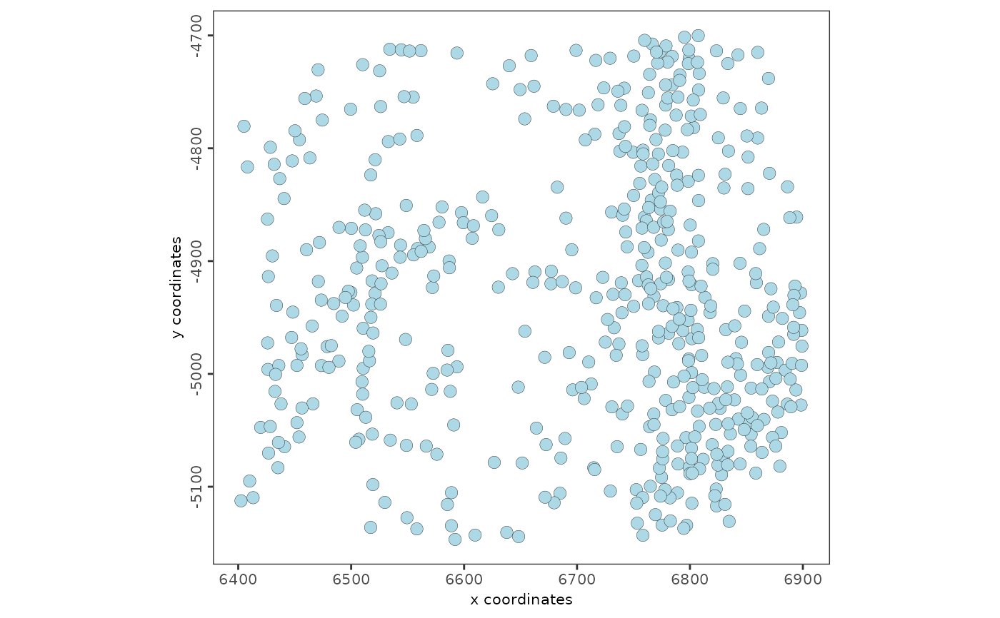
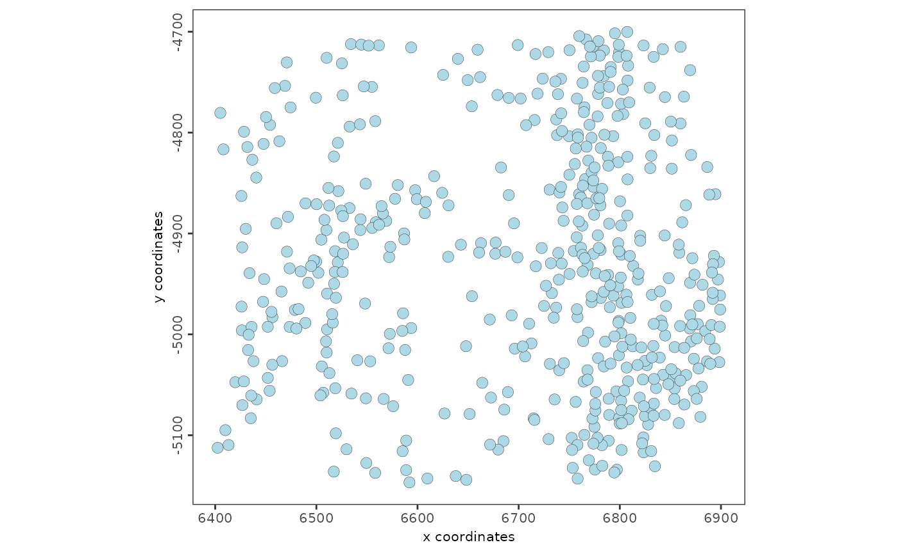

Simple wrapper for handling Giotto's framework for plotting outputs and saving Plotting functions should return using this handler.
Usage
plot_output_handler(
gobject,
plot_object,
save_plot = NULL,
return_plot = NULL,
show_plot = NULL,
default_save_name = NULL,
save_param = list(),
else_return = NULL
)Arguments
- gobject
giotto object
- plot_object
plot object
- save_plot
logical. (defaults to instructions setting) whether to save plot
- return_plot
logical. (defaults to instructions setting) whether to return the plot object
- show_plot
logical. (defaults to instructions setting) whether to print the plot in display device
- default_save_name
default name to use (should be set by the specific plotting function. Users should not interact with this parameter)
- save_param
list of plot saving parameters see
showSaveParameters()- else_return
optional. What should be returned instead if the plot object is not returned
Examples
g <- GiottoData::loadGiottoMini("vizgen")
#> 1. read Giotto object
#> 2. read Giotto feature information
#> 3. read Giotto spatial information
#> 3.1 read Giotto spatial shape information
#> 3.2 read Giotto spatial centroid information
#> 3.3 read Giotto spatial overlap information
#> 4. read Giotto image information
#> python already initialized in this session
#> active environment : '/usr/bin/python3'
#> python version : 3.10
#> checking default envname 'giotto_env'
#> a system default python environment was found
#> Using python path:
#> "/usr/bin/python3"
g_spatplot <- spatPlot2D(g, return_plot = TRUE)

plot_output_handler(g, plot_object = g_spatplot, save_plot = FALSE)
